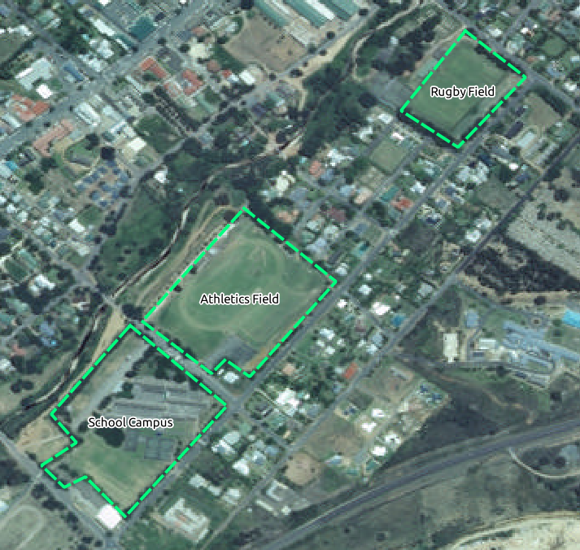
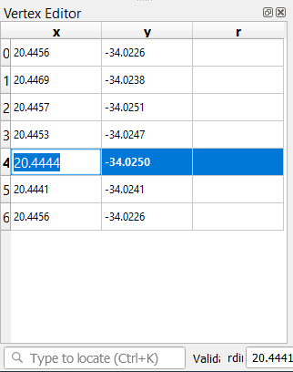

重要
翻訳は あなたが参加できる コミュニティの取り組みです。このページは現在 100.00% 翻訳されています。
5.1. レッスン: 新しいベクタデータセットを作る
使用するデータはどこかから持ってこなければなりません。最も一般的なアプリケーションでは、データがすでに存在しています。しかしプロジェクトがより特化し専門的になるほど、データが既に利用可能であるという可能性が低くなります。このような場合は、自身の新しいデータを作成する必要があります。
このレッスンの目標： 新しいベクタデータセットを作成します。
5.1.1. ★☆☆ （初級レベル） 理解しよう: レイヤ作成ダイアログ
新しいベクタデータを追加するには、まずそれを追加するためのベクタデータセットが必要です。現在の場合は、既存のデータセットを編集するのではなく、完全に新しいデータを作成して始めましょう。それゆえ、まず自分自身の新しいデータセットを定義する必要があります。
QGISを開き新しい無地のプロジェクトを作ります。
メニューから を選択し、クリックします。新しいレイヤを定義するための 新規シェープファイルレイヤ ダイアログが表示されます。

ファイル名 フィールドの ... をクリックします。保存ダイアログが現れます。
exercise_dataディレクトリに移動します。新しいレイヤを
school_property.shpとして保存します。この段階で欲しいデータセットの種類を決定することが重要です。それぞれの異なるベクタレイヤタイプは、バックグラウンドで「別々に構築」されているので、一度レイヤを作成したらそのタイプは変更できません。
次の練習では、区域を表す新しい地物を作成します。このような地物には、ポリゴンデータセットを作成する必要があります。
ジオメトリタイプ ではドロップダウンメニューから ポリゴン を選びます：

これは、ダイアログの残りの部分には影響しませんが、それは、ベクタデータセットが作成されたときにジオメトリの正しいタイプが使用されるようになります。
次のフィールドでは、座標参照系、またはCRS、を指定します。CRS は数値座標と地球表面の位置とを関連付ける方法です。詳しくはユーザーズマニュアルの 投影法の利用方法 を参照してください。
この例では、プロジェクトに関連付けられた既定のCRSであるWGS84を使います。

次に、 新規フィールド の下にグループ化されたフィールドのコレクションがあります。既定では、新しいレイヤは1つの属性、
idフィールド（下の フィールドリスト に表示されています）しか持ちません。しかし、作成したデータを有効に活用するためには、実際にこの新しいレイヤに作成する地物について、何か記述する必要があります。今のところ、nameというフィールドをひとつ追加して、テキスト長を80文字に制限されたテキストデータを格納することで十分でしょう。以下の設定を再現し、フィールドリストに追加 ボタンをクリックします：

ダイアログが次のようになることを確認します。

OK をクリックします
新しいレイヤが レイヤ パネルに表示されるはずです。
5.1.2. ★☆☆ （初級レベル） 理解しよう: データソース
新しいデータを作成するとき、それは明らかに地上に現実に存在するオブジェクトに関するものである必要があります。そのため、どこかから情報を取得する必要があります。
オブジェクトに関するデータを取得するにはさまざまな方法があります。たとえば、GPSを使用して現実の世界でのポイントをキャプチャし、それからQGISにデータをインポートできます。あるいは、セオドライトを使用してポイントを調査し、新しい地物を作成するために、手動で座標を入力できます。あるいは、デジタイズプロセスを使用して、衛星画像や航空写真などのリモートセンシングデータからオブジェクトをトレースできます。
この例では、デジタイズのアプローチを使用します。サンプルラスタデータセットが提供されているので、必要に応じてそれらをインポートする必要があります。
 データソースマネージャ ボタンをクリックします。
データソースマネージャ ボタンをクリックします。左にある
 ラスタ を選びます。
ラスタ を選びます。ソース パネルにある ... ボタンをクリックします:
exercise_data/raster/に移動します。ファイル
3420C_2010_327_RGB_LATLNG.tifを選びます。開く をクリックしてダイアログウィンドウを閉じます。

追加 と 閉じる をクリックします。画像が地図に読み込まれます。

航空写真が表示されない場合は、新規レイヤを選択して右クリックし、コンテキストメニューから レイヤの領域にズーム を選択してください。

 拡大 ボタンをクリックし、下の青くハイライトされている部分にズームインします：
拡大 ボタンをクリックし、下の青くハイライトされている部分にズームインします：
これでこの三つの運動場をデジタイズする準備ができました：

デジタイズする前に、 school_property レイヤを空中写真の上に移しましょう。
レイヤ ペーンにある
school_propertyレイヤを選び、一番上にドラッグします。

デジタイズを開始するためには、 編集モード に入る必要があります。GISソフトウェアでは一般的に、重要なデータを誤って編集したり削除することを防ぐために、これが必要とされます。編集モードは、レイヤごとに個別にオンまたはオフに切り替えられます。
school_property レイヤで編集モードに入るには:
レイヤ パネルで
school_propertyレイヤをクリックして選択します。 編集モード切替 ボタンをクリックします。
編集モード切替 ボタンをクリックします。このボタンを見つけることができない場合は、 デジタイズ ツールバーが有効になっているか確認してください。 メニューエントリ の横にチェックマークがあるはずです。
編集モードに入るとすぐに、いくつかのデジタイズツールが有効になっているのがわかります：
 ポリゴン地物を追加
ポリゴン地物を追加 頂点ツール
頂点ツール
他の関連ボタンはまだ無効ですが、新しいデータに触れると有効になります。
レイヤ パネルの
school_propertyレイヤ に鉛筆のアイコンが表示され、編集モードになっていることを示していることに注意してください。- ポリゴン地物を追加 ボタンをクリックし、学校の運動場のデジタイズを始めます。
マウスカーソルが十字になったのがわかると思います。これにより、デジタイズする点をより正確に配置することができます。デジタイズツールを使っているときでも、マウスホイールを回して地図を拡大・縮小したり、マウスホイールを押したまま地図内をドラッグしてパンできることを覚えておいてください。
デジタイズしている第1の地物は athletics field です：

運動場の縁のどこかの点でクリックすることでデジタイズを開始します。
さらに縁に沿ってクリックして点を置いてゆき、描画している図形が運動場を完全に覆うようにします。
最後の点を配置した後、右クリックしてポリゴンの描画を終了します。これで地物が確定し、 属性 ダイアログが表示されます。
値を以下のように埋めます:

OK をクリックすると、新しい地物が完成しました！

レイヤ パネルで
school_propertyレイヤを選択します。右クリックしてコンテキストメニューから 属性テーブルを開く を選びます。
表には、追加したばかりの地物が表示されます。編集モードでは、更新したいセルをダブルクリックすることで、属性データを更新することができます。

属性テーブルを閉じます。
作成したばかりの新しい地物を保存するには、
 編集内容の保存 ボタンをクリックします。
編集内容の保存 ボタンをクリックします。
地物をデジタイズしているときに間違えた場合、作成が終わった後で常にそれを編集できることを覚えておいてください。間違えた場合は、前述のように地物を作成し終わるまで、デジタイズを継続します。その後：
- 頂点ツール ボタンをクリックします。
移動したい頂点の上にマウスを置き、左クリックします。
頂点の正しい位置にマウスを移動し、左クリックします。これにより、頂点が新しい位置に移動します。


線分の移動も同じ要領で行えますが、線分の中点にカーソルを合わせる必要があります。
変更を取り消す場合は、
 元に戻す ボタンか Ctrl+Z を押します。
元に戻す ボタンか Ctrl+Z を押します。- レイヤ編集内容を保存 ボタンをクリックして、変更内容を保存するのを忘れないようにしてください。
編集が終わったら、
編集モード切替 ボタンをクリックして、編集モードから出ます。
5.1.3. ★☆☆ （初級レベル） 自分でやってみよう: ポリゴンをデジタイズする
学校自体と上のフィールドをデジタイズします。デジタイズを支援するためにこの画像を使用します：
それぞれの新しい地物は、一意な id 値を持つ必要があることを覚えておきましょう!
注釈
レイヤーに地物を追加し終わったら、編集内容を保存して、編集モードを終了することを忘れないでください。
注釈
以前のレッスンで学んだ技法を使って、school_property の塗りつぶし、輪郭、ラベルの配置や形式の体裁を整えることができます。
5.1.4. ★★☆ （中級レベル） 理解しよう: 頂点編集テーブルを使う
地物を編集するもう一つの方法は、 頂点編集 テーブルを使って各頂点の実際の座標値を手動で入力することです。
school_propertyレイヤの編集モードになっていることを確認してください。まだアクティブになっていない場合は、
頂点ツール ボタンをクリックします。school_propertyレイヤに作成したポリゴン地物の上にマウスを移動し、右クリックをします。すると、その地物が選択され、 頂点エディタ ペインが表示されます。
注釈
このテーブルは、その地物の頂点の座標を含んでいます。この地物には7つの頂点がありますが、地図上で確認できるのは6つだけであることに注意してください。よく見ると、0行目と6行目が同じ座標であることに気づくでしょう。これらは地物ジオメトリの始点と終点であり、閉じたポリゴン地物を作成するために必要です。
選択した地物のひとつまたは複数の頂点のうえでボックスをクリック＆ドラッグします。

選択された頂点の色が青に変わり、頂点の座標を含んでいる 頂点エディタ テーブルの対応する行がハイライトされます。

座標を更新するには、編集したいテーブルのセルを左ダブルクリックし、更新した値を入力します。この例では、行
4の x 座標が20.4450から20.4444に更新されます。 更新した値を入力したら、エンターキーを押して変更を適用します。マップウィンドウで頂点が新しい位置に移動するのが確認できます。
編集が終わったら、
編集モード切替 ボタンをクリックして編集モードを解除し、編集内容を保存します。
5.1.5. ★☆☆ （初級レベル） 自分でやってみよう: 線をデジタイズする
ここでは、道路レイヤにまだ記されていない2つのルートをデジタイズします。一つは細道、もう一つは小道です。細道はレイルトン郊外の南端を走り、印を付けた道路を起点と終点としています：

小道はさらにもう少し南です:

道路 レイヤがまだマップにない場合は、ダウンロードした訓練データの
exercise_dataフォルダに含まれるGeoPackageファイルtraining-data.gpkgからroadsレイヤを追加してください。やり方については ★☆☆ （初級レベル） 理解しよう: GeoPackageデータベースからベクタデータを読み込む を参照してください。exercise_dataディレクトリにroutes.shpという ESRI シェイプファイルのラインデータセットを新規に作成し、idとtypeという属性を設定します（上記の方法を参考にしてください）routes レイヤで編集モードを有効にします。
ライン機能を使用しているので、
 線の地物を追加 ボタンをクリックし、ラインデジタイズモードを開始します。
線の地物を追加 ボタンをクリックし、ラインデジタイズモードを開始します。一度に1つずつ、
routesレイヤにある細道と小道をデジタイズします。できるだけ正確にルートをたどるようにし、角やカーブに沿って点を追加します。type属性の値をpathまたはtrackに設定します。レイヤプロパティ ダイアログを使って、ルートにスタイルを追加します。細道と小道で異なるスタイルを自由に使ってください。
編集内容を保存し、
編集モードを切り替え ボタンを押して、編集モードをオフにします。
答え
シンボロジは重要ではありませんが、結果は大体このようになるはずです：
5.1.6. 結論
これで地物を作成する方法がわかりましたね！このコースではポイント地物の追加についてカバーしていませんが、より複雑な地物（ラインとポリゴン）で作業してきましたから実際に必要ありません。ポイントを置きたいところを1回クリックし、いつものように属性を与え、その後地物が作成されること以外、まったく同じ動作です。
デジタイズはGISプログラムでは非常に一般的な活動ですので、方法を知ることは重要です。
5.1.7. 次は?
GISレイヤーの地物は、単なる画像ではなく、空間内のオブジェクトです。例えば、隣接するポリゴンは、互いの位置関係を知っています。これは、 トポロジー と呼ばれています。次のレッスンでは、これがなぜ便利なのか、その例を見てみましょう。